Dynamics, fractals,
and SIMS
How do local rules, resistance, and the pattern of connections shape a group's path toward agreement?
SIMS are the simulated participants in the coordination tests. Nine batches turn your images into explicit models, executable checks, and original plots. The current Hug/SIMS experiment uses your updated clay deformation formula; its older threshold model is retained as historical.
Current: clay deformation, recovery and retained strain inside SIMS
New: apply the dynamics inside the SIMS test
New: reversibility, stability, and water-flow checks
New: switching, memory, and stopping · Topology tests applied to SIMS · Oscillation tests · Full methods and instructions · First-batch data · Second-batch data · Third-batch data · Fourth-batch data
Current Hug/SIMS · the clay formula
The Hug now uses the located wet-kaolin Burgers formula: immediate elastic deformation, delayed recovery, and retained viscous strain. This replaces the pressure-threshold rule for current SIMS work. The earlier 384 Hug runs remain labeled as historical below.
384 clay-based SIMS trajectories compare four published coefficient rows, three networks, and 32 matched initial retained patterns. Another 128 uncoupled runs isolate the effect of connections; 24 independent solver runs check the new calculation. Loading lasts from 20 to 120 seconds, followed by recovery through 420 seconds. Both limits of the loading and release jumps are retained.
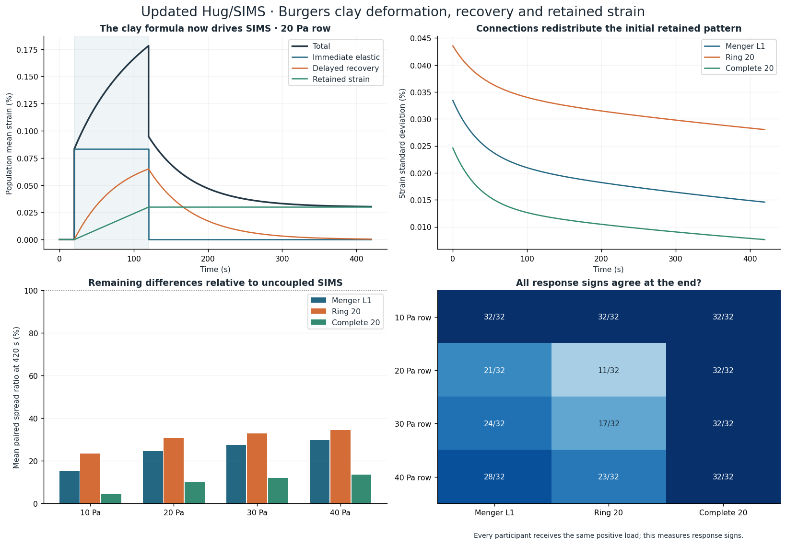
For the 20 Pa coefficient row, final spread is 24.6% of the uncoupled comparison on Menger, 30.7% on the ring, and 10.0% on the complete graph. Mean retained strain remains after release. Shared positive loading makes positive response signs expected; this measure does not establish voluntary agreement.
The new law has no opening-at-1 trigger. The original closed Hug outline remains joined under the shear display. The coupling is a stated SIMS modeling choice, and the material coefficients do not validate that interaction as a physical clay network. The maximum independent-solver discrepancy is 4.86e-14 strain. Twenty-four added tests check source reproduction, load jumps, retained memory, graph symmetry, energy accounting and numerical agreement.
Current equations, assumptions and results · Fixed protocol · All clay runs and controls · Located source files and hashes
Historical: the earlier threshold-based Hug experiment
Historical batch 8 · the earlier threshold Hug
Historical model. Current Hug/SIMS tests use the updated clay formula. The results below retain the older equations.
Your Hug geometry, pressure-memory extension, fluid initialization, and later stress work were located in My-Sources-Project-ALL. Five source files are preserved byte for byte here, including the nine original geometry and pressure tests. This batch uses the reduced lean-and-memory equations; the fluid and Lorenz extensions remain separately identified in the source inventory.
Each SIM has lean q, velocity v, and fading memory m. We add reciprocal neighbor attraction to the original lean acceleration: q′=v; v′=(r+c m)q−q³−d v−2Lq. The original loading/recovery times and pressure pulse remain intact. Four conditions reuse 32 starts on each of three networks, producing 384 main trajectories plus 72 numerical and reflection controls.
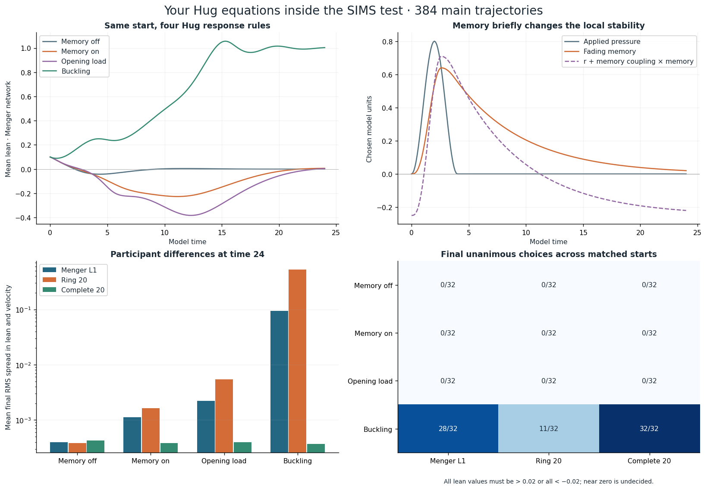
The maximum RK4-versus-adaptive discrepancy is 2.35e-06; independent DOP853/Radau, half-step, reflection, and energy-budget controls pass the thresholds fixed in the protocol. Opening preserves your original irreversible geometry rule. It does not change contacts or reduce the prescribed pressure.
A control that catches a known failure
A pressure pulse lasting 0.001 is missed entirely by the original steps 0.02 and 0.01. Both report zero memory. Splitting at the pulse boundary gives a sampled peak memory of 0.0624613; two independent adaptive methods agree within 3.3e-11. Agreement between two coarse steps alone would have hidden this error. The main experiment uses a resolved four-unit pulse.
Located files, equations, results and scope · Every outcome and control · Executable checks
Batch 7 · the ideas operate inside the SIMS test
Twenty SIMS now follow explicit continuous response rules derived from the supplied linear, reversible, and water-response examples. There are 1,632 new matched trajectories: 672 linear-response runs, 192 reversal runs, and 768 response-rate runs. Each condition reuses 32 starting states across Menger, ring, and complete networks. The original 12,800 binary-choice runs retain their earlier rules.
A SIM has an expressed preference coordinate and, in the linear cases, a second response coordinate. Neighbor exchange reduces differences while the local dynamics can attract, rotate, or repel. These are stated modeling choices, recorded in the protocol. Agreement of choices, alignment of coordinates, and settling to a bounded state are measured separately.
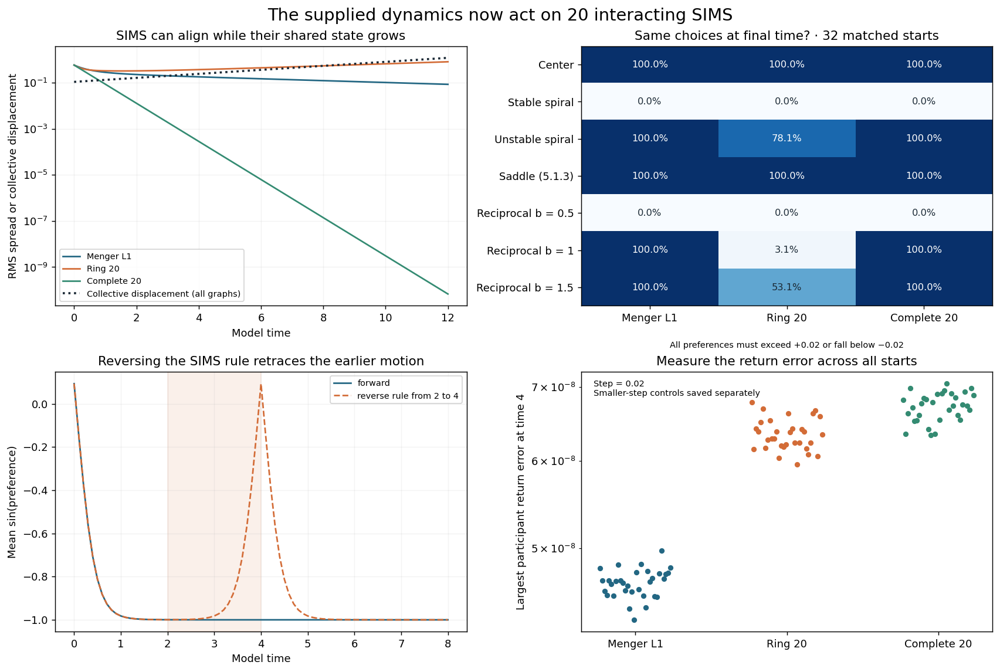
Reverse the rule and test whether the participants retrace
The reversible network has the textbook two-participant system as an exact special case. It also has a strictly decreasing population potential under forward evolution. Reversing the sign of the rule from time 2 to 4 retraces the earlier motion; restoring it resumes attraction. Across all 96 reversal interventions, the largest return error is below 7.1×10⁻⁸. Eighteen smaller-step comparisons check the numerical accuracy.
Change response speed and steady preference separately
The saved 25 °C water-property ratios select four dimensionless SIMS response settings. Every SIM receives the same signal, which switches from positive to negative at time 4. A fixed-input comparison permits the final preference to change. A second comparison adjusts the input so that every setting has the same final target, isolating response speed.
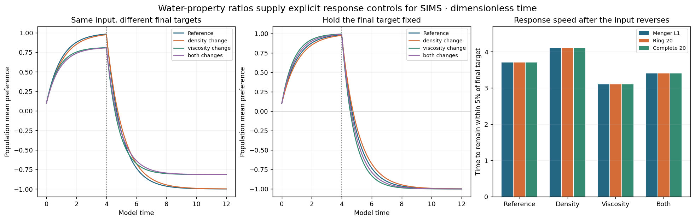
The expansion adds 24 mathematical and participant-level tests. They check coupled equations against an independent integrator, exact collective modes, graph relabeling, the two-participant reduction, reversal convergence, target matching, and agreement measurements. Rates are experimental SIMS rules rather than measurements of participant behavior.
Rules, measurements, outcomes, and interpretation · All runs and controls · Executable tests
Batch 6 · reversing time does not imply conserved energy
The textbook example is reconstructed from its displayed nullclines and Jacobian: x′=−2 cos x−cos y, y′=−cos x−2 cos y. It satisfies f(−z)=f(z), so negating a trajectory and reversing its time gives another trajectory. Nevertheless, (−π/2,−π/2) attracts nearby paths. The reversed partner at (π/2,π/2) repels them. Two other equilibria are saddles. These four repeat every 2π in each coordinate.
The function V=sin x+sin y strictly decreases away from equilibria: V′=−2(cos²x+cos x cos y+cos²y). This supplies an analytic exclusion of nonconstant closed orbits and explains why reversibility and conservation are different properties. The tests also compare a diagonal trajectory to its exact solution, reverse finite trajectories, and halve the integration step.
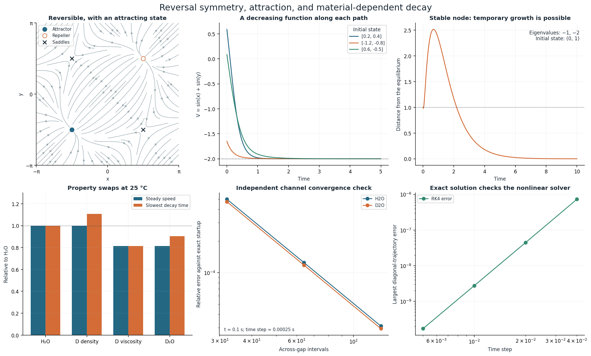
Stable does not mean every measurement decreases at every instant
The added linear control has eigenvalues −1 and −2, yet an initial unit displacement reaches distance 2.513 before decaying. The two components temporarily transfer growth between directions. Reciprocal equal coupling has real eigenvalues a+b and a−b and cannot generate a spiral in this two-variable model. At a=−1, b=1, a neutral direction remains; treating that boundary as an attracting node would be wrong.
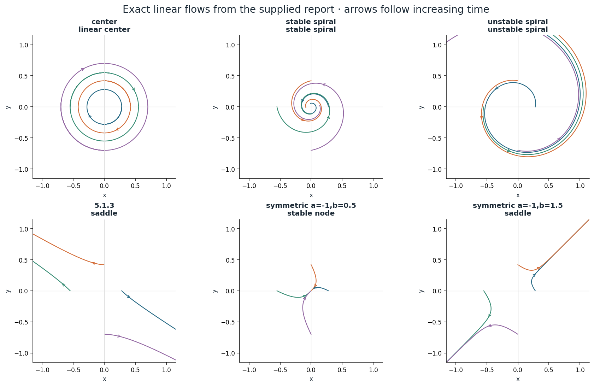
What the water screenshot lets us check
Independent formulas reproduce all 36 saved channel steady speeds and decay times. The largest difference between the Fourier startup mean and the saved finite-difference mean after one second is 8.20e-07 relative. At 25 °C, the stated pressure and geometry give D₂O a 18.55% lower steady mean speed. Density changes the transient time scale; dynamic viscosity changes both steady speed and decay time.
A new implementation evolves discrete sine modes and converges toward the analytic channel solution as the spatial grid is refined. These checks do not rerun the molecular or three-dimensional vortex experiments, add an independent measured velocity field, or establish a quantum prediction of viscosity. The source correlations are documented by IAPWS for ordinary water and IAPWS for heavy water.
Equations, controls, provenance, and limits · New results · Reference table extracts and source hashes
Batch 5 · switching, synchronization, memory, and stopping
The new pages become four executable experiments: saddle-to-saddle switching, a pacemaker with 15 driven units, a local memory diagnostic with an inference baseline, and a sudden parameter change that stops oscillations. These are activity-state models; the earlier 12,800 SIMS coordination runs remain a separate experiment.
In the three-state case, the completed pauses grow from 6.96 to 104.95 time units. A constant positive input limits this growth in the tested window. The input changes the equations; it is not a numerical floor or a noise simulation.
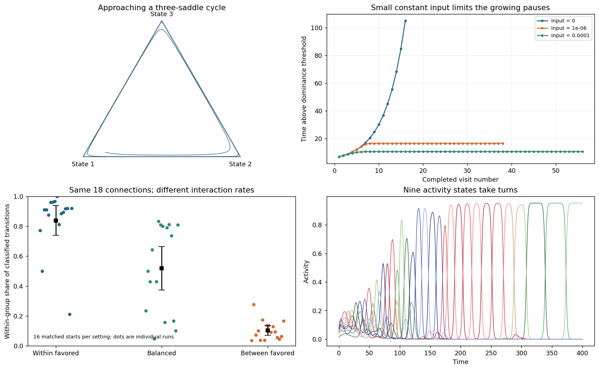
The sixteen-unit synchronization figure
The primary source uses a directed chain closed by a weak return connection: forward strength 1.5, closure strength 0.01, pacemaker γ=1.05, driven γ=1.47. The same settings produced within-group-dominated paths in 57 of 64 starts and between-group-dominated paths in 7. These counts describe our selected initial-state distribution and observation window.
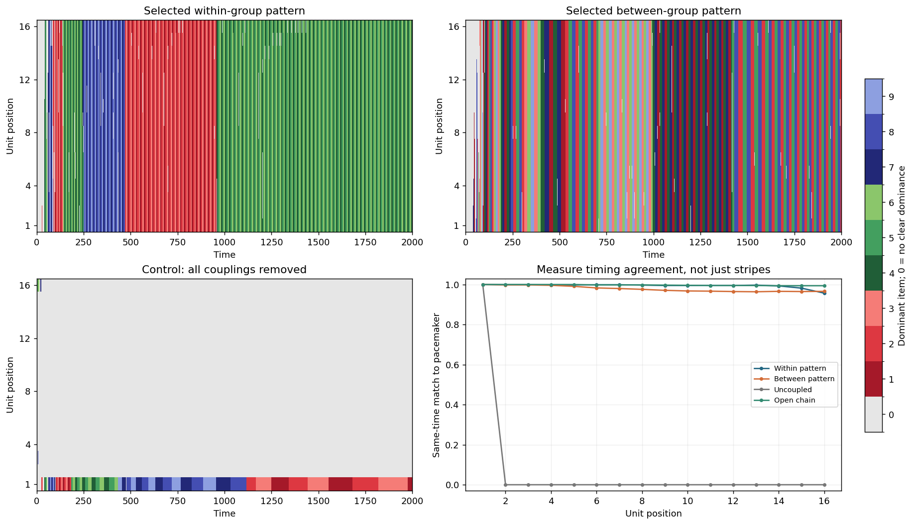
For the selected within-group and between-group patterns, the last unit matches the pacemaker at the same sampled time in 95.7% and 96.6% of qualified observations after t=1,000. Their amplitudes differ. Removing every coupling leaves the driven units without clear dominance; the open-chain control also synchronizes over this finite window. Weak closure is therefore part of the source configuration, not a demonstrated requirement for all entrainment.
What carries memory, and what can be learned?
The linear saddle diagnostic checks x′=λx and y′=−cy. At exit, y retains a factor εc/λ. Relative to readout noise of size ε, the retained offset grows when c/λ<1 and shrinks when c/λ>1. A later saddle can erase it. We verify the formula and the resulting history-conditioned branch probabilities; this is a declared local model, not a full noisy-network or delay-learning reconstruction.
A separate least-squares baseline recovers the nine-state interaction matrix from complete activity observations and predicts an unseen starting state. The maximum interaction-rate error is 9.7e-06 with clean observations and 0.0062 with added measurement noise. Equilibrium-only observations have rank 1 and cannot determine the matrix uniquely. The review's adaptive teacher algorithm is distinct from this transparent baseline.
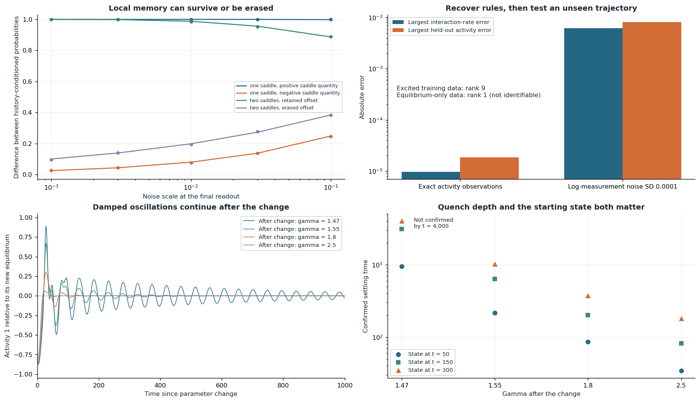
Stopping has its own time scale
After changing γ to 1.47, the three tested starting states settle in 953 and 3,113 time units, or fail to confirm settling by t=4,000. At γ=2.5, their times are 34.5, 82, and 180. Settling means every component stays within 5% of its new equilibrium through the remaining observation window, with at least 100 time units of confirmation. This is a finite-horizon measurement. The complex stable eigenvalues explain damped oscillations in these selected models.
Validation and source boundaries
The 18 intended nine-state connections are checked in invariant coordinate planes. A connection is a nonconstant orbit approaching its source in backward time and its target in forward time; staying at an equilibrium is not counted as a self-connection. The plane restrictions give one unstable source direction, a stable target, no positive interior equilibrium, and negative Dulac divergence. Numerical arrivals support this analytic construction. Jacobians are compared with finite differences; an isolated component is checked against the logistic solution. Smaller steps preserve the selected transition sequences. The worst selected pacemaker trajectory difference is about 0.00102, while same-time agreement changes by under 0.1 percentage point. The 12 quench runs have four step-refinement controls. No source screenshots are report assets.
Sources, equations, parameter choices, qualifications, and commands are in HETEROCLINIC_METHODS.md. Data: switching, pacemaker, memory and inference, quenches. The work uses the primary papers by Voit and Meyer-Ortmanns, Thakur and Meyer-Ortmanns, Ashwin and Postlethwaite, and Aravind and Meyer-Ortmanns.
Batch 4 · use topology to test the model
Your slides become executable checks: graph projections and lifting, simplicial gluing, category nerves, cube collapses, and controls for how those constructions affect SIMS. This batch was developed and tested locally.
39,056 finite algebraic equalities pass, alongside graph, homology, and behavioral checks. The new SIMS experiment contains 2,560 runs with matched starting states and randomized condition order.
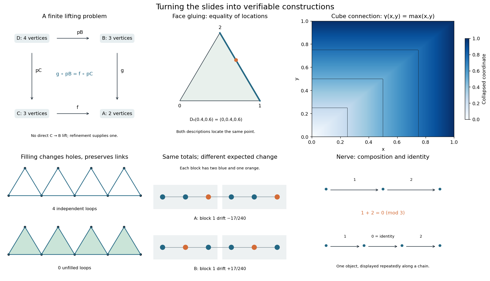
Test 1 · does a valid graph projection preserve behavior?
The Menger parent maps pass the connected-epimorphism checks: 400 vertices map onto 20, then onto 1. A separate six-SIM path exposes a limit of aggregation: two arrangements have one orange SIM in each three-SIM block, yet the first block's expected next change is −17/240 in one arrangement and +17/240 in the other. Both blocks look blue under majority reporting even though neither microscopic state is unanimous.
This is an exact one-update calculation, conditional on an active uniformly chosen seat and the model's 15% refusal probability. Matching group totals does not preserve the future dynamics by itself. Who occupies which contact position still matters, even with identical SIM behavior.
Test 2 · does adding filled faces change pairwise coordination?
Four connected triangle outlines have four independent unfilled loops. Filling the triangles removes those loops while preserving all nine vertices and twelve pairwise links. The pairwise SIMS model produces identical recorded outcomes in all 320 matched pairs, including initiative sensitivity. A behavioral effect from group faces would require a rule that actually reads those faces.
Test 3 · what happens if transitivity adds contacts?
The finite Menger graph's adjacency is not transitive. Its transitive closure connects all 20 positions, increasing links from 24 to 190. Ordinary first agreement rises from 72.66% to 92.97% in this matched sample. With the corner position actively opposing, first agreement instead falls from 39.84% to 3.12%; lasting agreement remains rare.
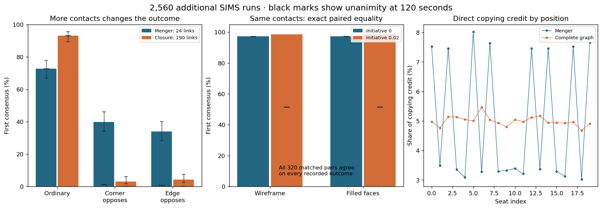
Main topology SIMS results
| Contacts | Rule / seat | First agreement | At 120 s | Capped seconds | Switches |
|---|---|---|---|---|---|
| Menger contacts | ordinary / baseline | 72.66% | 72.66% | 70.7 | 67.7 |
| Menger contacts | oppose / corner | 39.84% | 1.17% | 97.1 | 122.0 |
| Menger contacts | oppose / edge | 33.98% | 0.78% | 100.1 | 105.1 |
| Transitive closure contacts | ordinary / baseline | 92.97% | 92.97% | 46.9 | 77.4 |
| Transitive closure contacts | oppose / corner | 3.12% | 0.00% | 118.6 | 191.5 |
| Transitive closure contacts | oppose / edge | 4.30% | 0.00% | 117.7 | 192.2 |
| Triangle wireframe | ordinary / baseline | 97.27% | 97.27% | 31.3 | 14.1 |
| Filled triangles | ordinary / baseline | 97.27% | 97.27% | 31.3 | 14.1 |
Initiative sensitivity: probability 0.02
| Contacts | Rule / seat | First agreement | At 120 s | Capped seconds | Switches |
|---|---|---|---|---|---|
| Menger contacts | ordinary / baseline | 59.38% | 18.75% | 81.3 | 118.8 |
| Menger contacts | oppose / corner | 20.31% | 0.00% | 107.5 | 152.4 |
| Menger contacts | oppose / edge | 21.88% | 1.56% | 108.9 | 138.4 |
| Transitive closure contacts | ordinary / baseline | 85.94% | 32.81% | 58.5 | 149.7 |
| Transitive closure contacts | oppose / corner | 0.00% | 0.00% | 120.0 | 215.3 |
| Transitive closure contacts | oppose / edge | 3.12% | 0.00% | 117.6 | 215.8 |
| Triangle wireframe | ordinary / baseline | 98.44% | 51.56% | 24.2 | 33.8 |
| Filled triangles | ordinary / baseline | 98.44% | 51.56% | 24.2 | 33.8 |
Position and identity remain separate tests
All 48 rotations/reflections of the finite Menger construction preserve its contact graph. They group the positions into eight equivalent corners with three contacts each, and twelve equivalent edge seats with two contacts each. A graph symmetry cannot exchange those two types because their degrees differ. On the complete graph every seat is structurally equivalent. Identity labels still have no behavioral effect under the specified copying rule.
What the algebra checks establish
Finite lifting succeeds after a four-vertex refinement in the selected example, while a compatible extra prescription can still block a lift. Simplicial faces delete vertices and degeneracies repeat them; barycentric checks make the gluing and collapse picture exact. The category-nerve example composes arrows by addition modulo 3 and inserts the identity arrow. Cube connections use max of neighboring coordinates, which matches the supplied relation involving insertion of zero.
The Menger-prespace paper concerns an infinite generic limit with stronger extension properties. Our finite graph tests check prerequisites and counterexamples; they do not certify that generic limit or its lifting theorem. Its graph-theoretic connectedness also differs from connectedness of the underlying zero-dimensional topological space. The simplicial background is in Friedman's illustrated introduction.
Test design and interpretation · All saved outcomes · python topology.py --check
The first result: shape matters through connections
The Koch boundary and a matching 48-SIMS ring produced identical outcomes. Each SIM has the same two neighbors in both drawings. The Menger network changes the contacts: ordinary agreement occurred in 71.48% of its 20-SIMS rounds, compared with 52.54% on a 20-SIMS ring.
These are the main runs with no spontaneous initiative. Whole-network connectivity changes in the Menger comparison; the experiment does not isolate a uniquely fractal cause. Menger-versus-Koch would also change group size.
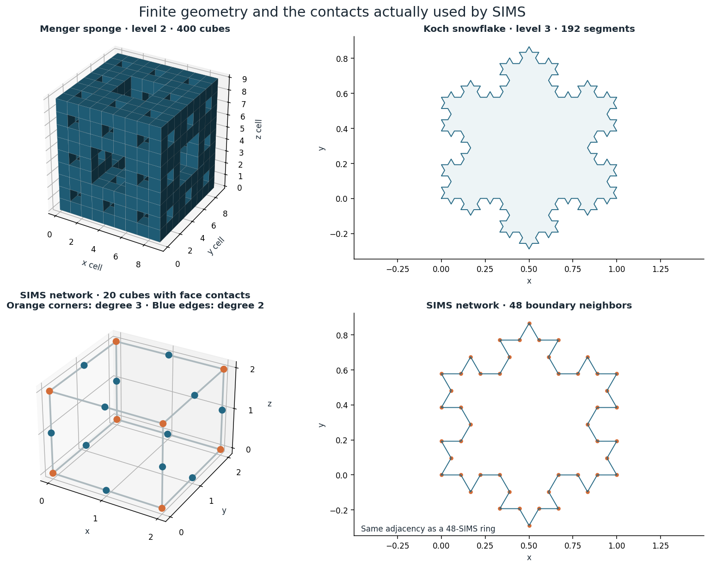
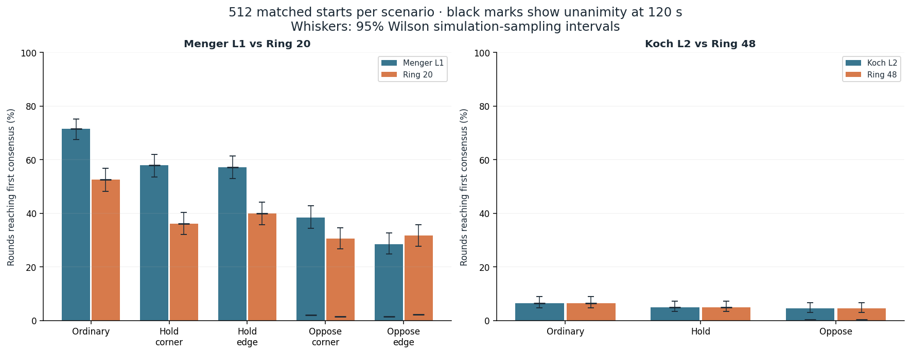
A resisting position can change the path
“Hold” keeps one SIM's starting color. “Oppose” chooses the opposite of its neighbors' majority when active. On Menger corner-opponent runs, 38.48% reached agreement at least once, but only 1.95% were unanimous at 120 seconds. First arrival and persistence answer different questions.
Main results · 512 matched rounds per case
| Network | Rule / position | First agreement | At 120 s | Capped time | Switches |
|---|---|---|---|---|---|
| Menger L1 | ordinary / baseline | 71.48% | 71.48% | 73.3 s | 68.3 |
| Menger L1 | hold / Menger corner | 57.81% | 57.81% | 82.2 s | 72.3 |
| Menger L1 | hold / Menger edge | 57.23% | 57.23% | 83.9 s | 72.2 |
| Menger L1 | oppose / Menger corner | 38.48% | 1.95% | 99.3 s | 122.0 |
| Menger L1 | oppose / Menger edge | 28.52% | 1.37% | 103.7 s | 105.2 |
| Ring 20 | ordinary / baseline | 52.54% | 52.54% | 87.7 s | 49.1 |
| Ring 20 | hold / Menger corner | 36.13% | 36.13% | 96.9 s | 51.8 |
| Ring 20 | hold / Menger edge | 39.84% | 39.84% | 95.3 s | 50.9 |
| Ring 20 | oppose / Menger corner | 30.47% | 1.37% | 102.9 s | 78.9 |
| Ring 20 | oppose / Menger edge | 31.64% | 2.15% | 101.9 s | 79.5 |
| Koch L2 | ordinary / boundary seat | 6.45% | 6.45% | 117.5 s | 121.5 |
| Koch L2 | hold / boundary seat | 4.88% | 4.88% | 117.7 s | 122.4 |
| Koch L2 | oppose / boundary seat | 4.49% | 0.39% | 118.2 s | 149.7 |
| Ring 48 | ordinary / boundary seat | 6.45% | 6.45% | 117.5 s | 121.5 |
| Ring 48 | hold / boundary seat | 4.88% | 4.88% | 117.7 s | 122.4 |
| Ring 48 | oppose / boundary seat | 4.49% | 0.39% | 118.2 s | 149.7 |
Initiative sensitivity · 128 matched rounds per case
Ordinary SIMS can spontaneously flip with probability 0.02 when active. All other behavioral parameters remain fixed.
| Network | Rule / position | First agreement | At 120 s | Capped time | Switches |
|---|---|---|---|---|---|
| Menger L1 | ordinary / baseline | 60.16% | 18.75% | 84.6 s | 114.7 |
| Menger L1 | hold / Menger corner | 52.34% | 15.62% | 92.6 s | 111.2 |
| Menger L1 | hold / Menger edge | 59.38% | 17.97% | 88.8 s | 110.6 |
| Menger L1 | oppose / Menger corner | 26.56% | 0.78% | 105.6 s | 144.3 |
| Menger L1 | oppose / Menger edge | 17.19% | 0.00% | 110.6 s | 131.7 |
| Ring 20 | ordinary / baseline | 40.62% | 10.16% | 98.1 s | 88.6 |
| Ring 20 | hold / Menger corner | 32.03% | 10.16% | 102.4 s | 86.7 |
| Ring 20 | hold / Menger edge | 35.94% | 10.16% | 102.9 s | 85.5 |
| Ring 20 | oppose / Menger corner | 17.97% | 0.78% | 109.0 s | 109.6 |
| Ring 20 | oppose / Menger edge | 19.53% | 0.78% | 111.3 s | 110.1 |
| Koch L2 | ordinary / boundary seat | 3.12% | 0.78% | 119.0 s | 213.9 |
| Koch L2 | hold / boundary seat | 3.12% | 0.78% | 118.9 s | 208.7 |
| Koch L2 | oppose / boundary seat | 0.78% | 0.00% | 119.7 s | 232.2 |
| Ring 48 | ordinary / boundary seat | 3.12% | 0.78% | 119.0 s | 213.9 |
| Ring 48 | hold / boundary seat | 3.12% | 0.78% | 118.9 s | 208.7 |
| Ring 48 | oppose / boundary seat | 0.78% | 0.00% | 119.7 s | 232.2 |
Identity labels have no behavioral effect in this model. A permutation test confirms that renaming SIMS preserves seat outcomes. Testing personality requires an explicit identity-dependent rule or volunteer evidence. Direct copying credits are saved as a limited influence measure.
Batch 1 · check the dynamics before interpreting them
The first set covers the Lorenz orbit, phase space, damping, Euler's method, logistic growth, and a scalar laser-inspired threshold. Exact solutions and step refinement provide checks on numerical accuracy.
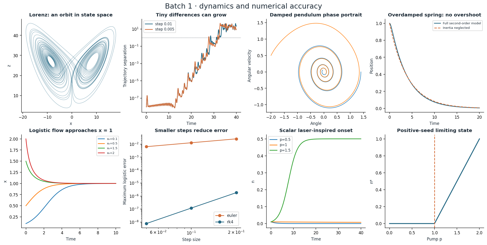
The scalar threshold uses the chosen equation n′=(p−1)n−n². It tracks an intensity-like quantity with growth and saturation. The improved laser in batch 2 includes a separate inversion variable. Optical phase is absent from both models.
Menger counts, volume, and exposed surface are checked through level 3. Koch counts, perimeter, and area are checked through level 5. Finite drawings approximate limiting fractal constructions. See Caltech's Menger notes and Reed's snowflake derivation.
Batch 2 · when a stable state disappears
The new images describe folds, hysteresis, and competing stable states. Blue points below are stable equilibria; orange points are unstable. Up/down cusp paths follow equilibria quasistatically, so their jump points should not be read as a finite-speed switching experiment.
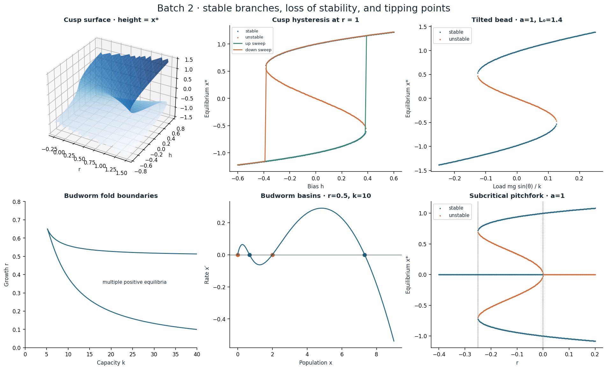
Your exact bead equation
For the selected a=1, L₀=1.4, and mg/k=1, the horizontal stable positions are ±0.979796. One stable branch disappears at a tilt magnitude of 7.2443°. Changing the spring geometry changes this value.
Budworm refuge and outbreak
Using standard saturating predation, r=0.5 and k=10 give stable population levels 0.683375 and 7.316625, separated by unstable x=2. The tested starting populations below and above 2 reach different stable levels. The predation function missing from the crop is stated in the methods, following the standard budworm equation.
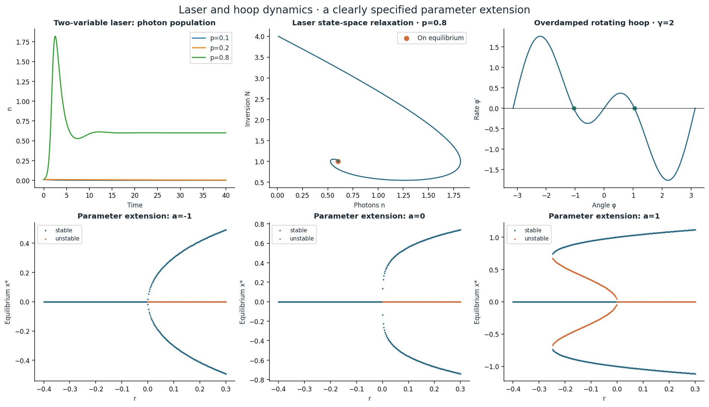
The improved laser has a moving internal state
With G=κ=1 and f=0.2, the threshold is p=0.2. At p=0.8 the solution approaches (n,N)=(0.6,1) through decaying oscillations; the equilibrium eigenvalues are −0.4 ± 0.663325i. Halving the time step changes the computed trajectory by at most 3.3e-07 over the sampled interval. At the threshold, convergence is much slower.
The rotating-hoop test finds stable angles ±π/3 for γ=2 and checks the small-angle cubic expansion. The parameter-a extension compares x′=r x+a x³−x⁵ at a=−1,0,1. All choices and equations are recorded in the methods.
Batch 3 · when motion keeps repeating
A stable limit cycle attracts nearby motion. An unstable cycle repels it. A half-stable cycle attracts from one side and repels from the other. We tested explicit radial examples on both sides of the unit circle; the unstable outer trajectory stops just before radius 2 to avoid its finite-time escape.
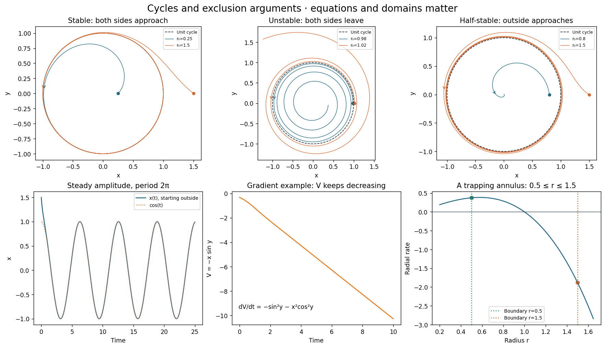
When a closed orbit is impossible
For your gradient example, x′=sin y and y′=x cos y, the potential V=−x sin y satisfies dV/dt=−sin²y−x²cos²y. A nonconstant closed orbit would have to return to its original potential despite losing potential along the way, which is impossible.
| Dulac example | Weight g | div(gF) | Domain |
|---|---|---|---|
| x′=x(2−x−y), y′=y(4x−x²−3) | 1/(xy) | −1/y | x>0, y>0 |
| x′=y, y′=−x−y+x²+y² | e⁻²ˣ | −e⁻²ˣ | Entire plane |
Both divergences are strictly negative on their stated simply connected domains, excluding closed orbits there. The first vector field is reconstructed from the weighted expressions in your crop. The analytic identities establish these conclusions; sample trajectories and finite-difference tests check the implementation.
When a closed orbit must exist
For the stable radial example, flow points into the annulus 0.5≤r≤1.5 on both boundaries and never stops inside. This supplies the trapping and no-equilibrium conditions for Poincaré–Bendixson. The annulus has a hole; it does not meet Dulac's simply connected domain condition.
The earlier μ-dependent annulus image (Figure 7.3.3) still needs its equations. It is recorded as pending, rather than assigned a guessed vector field.
Sel’kov: a stable state can give way to a rhythm
The equilibrium is (b,b/(a+b²)). Its determinant is a+b² and its trace is [b²−a−(a+b²)²]/(a+b²). At a=0.1 it is repelling for 0.419992<b<0.789688. A compact trapping polygon and a small excluded neighborhood of that repeller establish existence of a periodic orbit. This argument alone does not establish uniqueness.
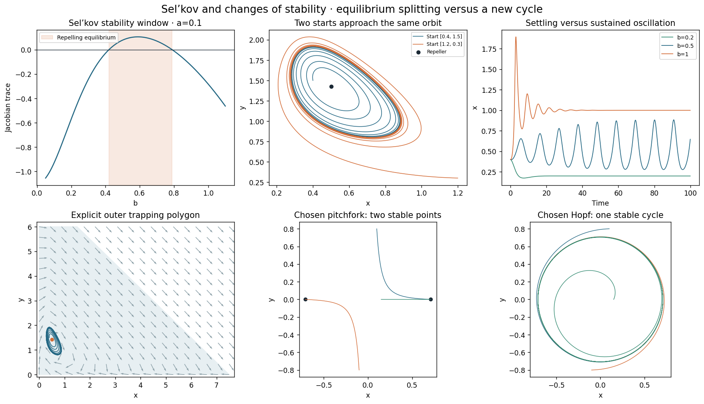
Liénard, van der Pol, and Duffing
For van der Pol, x″+μ(x²−1)x′+x=0, the supplied Liénard hypotheses hold for μ>0: f is even, g=x is odd and restoring, and F=μ(x³/3−x) changes sign once on the positive axis at √3 and then increases without bound. Thus there is a unique stable limit cycle. Weak damping gives an almost circular orbit of amplitude near 2; stronger damping gives slow drifts and fast jumps.
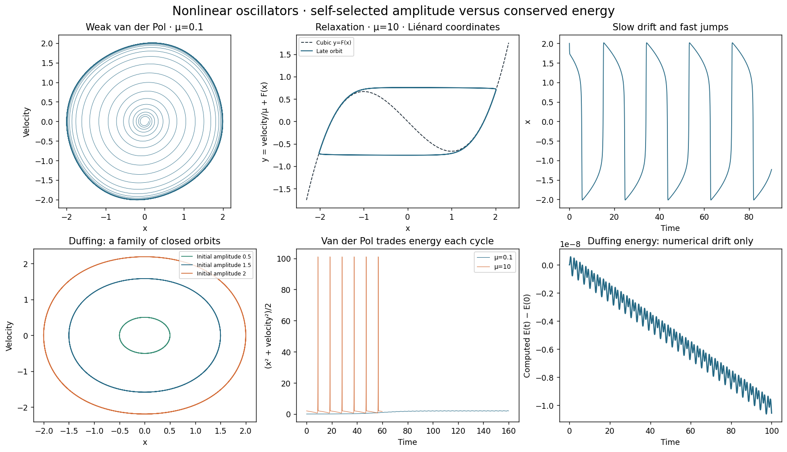
| van der Pol μ | Measured period | Maximum x | Period change on halving step |
|---|---|---|---|
| 0.1 | 6.287111 | 2.000103 | 4.3e-07 |
| 1 | 6.663287 | 2.008620 | 2.2e-07 |
| 10 | 19.078370 | 2.014285 | 1.6e-06 |
At μ=10 the leading large-μ period estimate is 16.1371, compared with 19.0784 numerically. This asymptotic estimate is still approximate at μ=10. The maximum same-time state difference after halving the step is 0.005858, concentrated around fast jumps; period agreement does not imply equal accuracy for every state component.
The supplied unforced Duffing equation, x″+x+εx³=0, conserves E=x′²/2+x²/2+εx⁴/4. Its closed orbits form a family with different amplitudes and periods. They are not isolated attracting limit cycles. With ε=0.1, initial amplitudes 0.5, 1.5, and 2 give periods 6.225140, 5.814440, and 5.516852, checked against an independent energy integral.
Averaging and the pumped swing
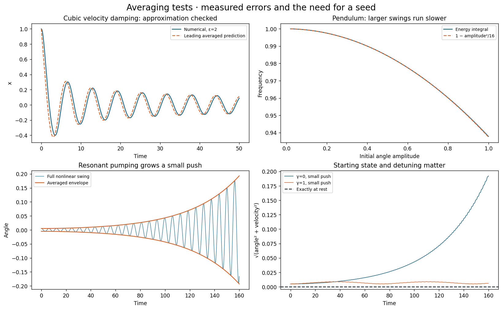
The pendulum frequency correction ω≈1−A²/16 agrees closely with its energy-integral frequency for the tested A=0.1, 0.4, 0.8. Green's theorem applied to a circular approximation of weak van der Pol gives επR²(1−R²/4)=0, selecting R≈2.
The cropped cubic-damping exercise uses x″+εx′³+x=0. Its leading averaged prediction is x≈cos(t)/√(1+3εt/4) for the supplied unit initial displacement. At ε=2 on 0≤t≤50, its maximum position error is 0.253; the test records the visible early discrepancy as well as the later decay.
For x″+(1+εγ+ε cos 2t) sin x=0, exact rest remains rest. A small initial angle of 0.005 grows to a maximum absolute angle of 0.1909 by t=160 for ε=0.1, γ=0; the detuned γ=1 run stays below 0.0086. The leading small-angle instability band is |γ|<1/2. This time-dependent model needs a seed and its averaging approximation has a stated small-angle range.
All third-batch measurements · Equations, proofs, numerical settings, and limitations
What connects these tests?
Each system has a state, a rule for changing it, and questions about where it settles. For SIMS, the practical lesson is to measure both agreement and its stability, and to distinguish a changed drawing from changed contacts.
Batch 7 puts the supplied reversal, linear-stability, and response-rate ideas into explicit SIMS rules. Its continuous-state assumptions, paired controls, and measurements are documented separately from the original binary-copying experiment. Repeated switching can decay or persist; alignment can coexist with collective growth. The current results concern the models and parameter choices tested here.
Reproduce this notebook
python -m pip install -r requirements.txtpython -m unittest -vpython run_study.py --checkpython bifurcations.py --checkpython oscillations.py --checkpython topology.py --checkpython heteroclinic.py --checkpython pacemaker.py --checkpython memory_inference.py --checkpython quench.py --checkpython bridge_checks.py --checkpython sims_response.py --checkpython clay_sims.py --check
Python 3.12. The coupled ensemble, inference, quenches, and their tests use NumPy. Requirements are pinned in requirements.txt. Read the methods for limitations, sources, and the optional volunteer extension.